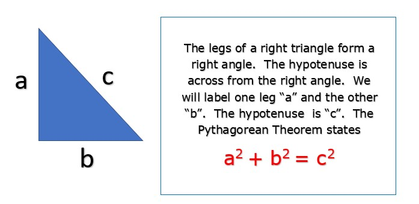
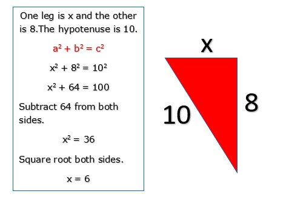
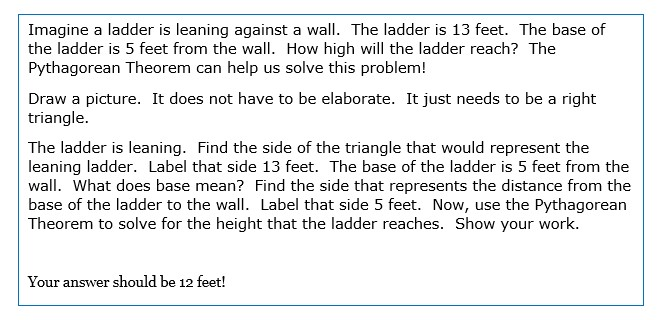
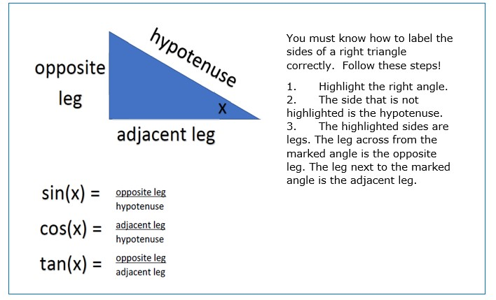
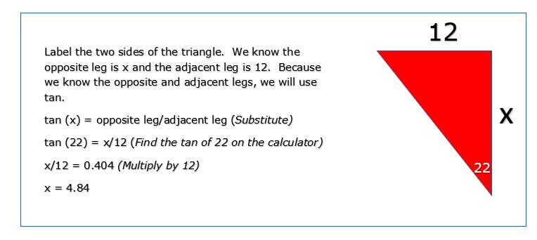

Pythagorean Theorem
Learner Goal:
You will be able to find the missing side of a right triangle when two sides are known using the Pythagorean Theorem.
Does the Pythagorean Theorem look familiar? You saw it earlier this year! We used the Pythagorean Theorem when we learned how to find the distance between two points on a graph. The distance formula is derived from the Pythagorean Theorem. When we found the distance between two points, we always found the length of the hypotenuse of the triangle. In this unit, we are going to use the Pythagorean Theorem to find the length of any missing side of a right triangle when two sides are known. We are also going to start drawing and labeling right triangles that model a given situation. We will use the Pythagorean Theorem to find the missing side.

Your Turn!
Right Triangle Trigonometry
Learner Goal:
You will be able to use trigonometric ratios to find missing measures of right triangles.

Example
If you would like to see more examples, Watch the video below!